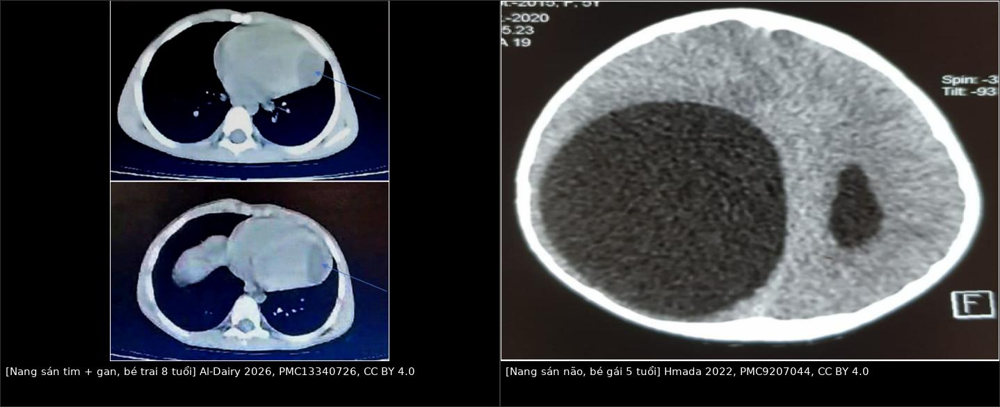
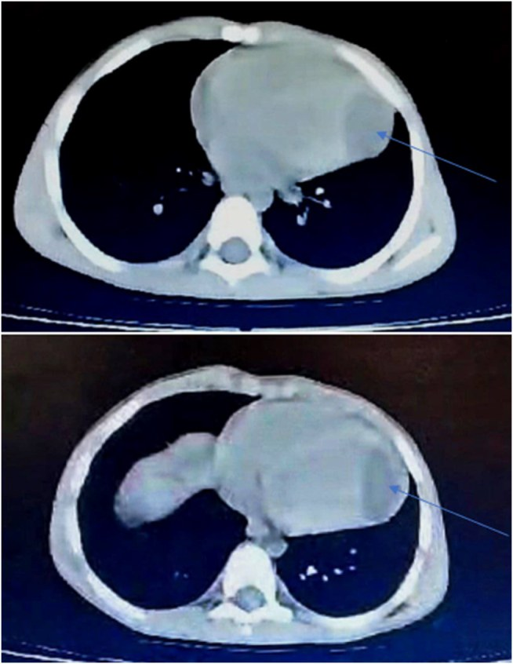
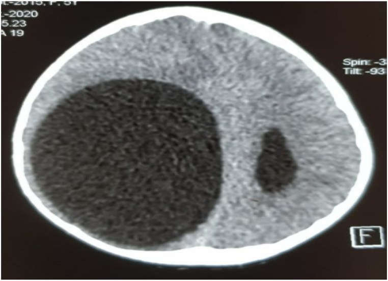
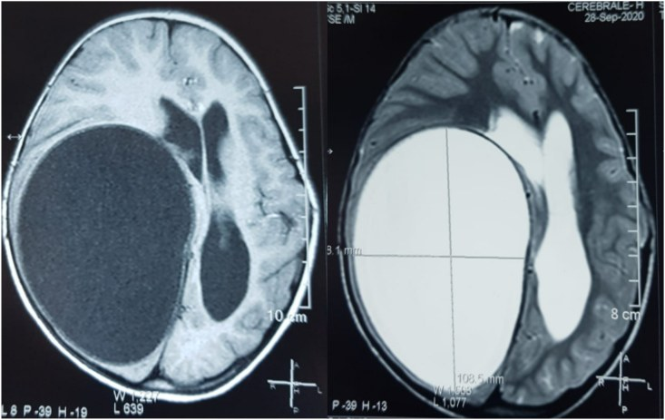
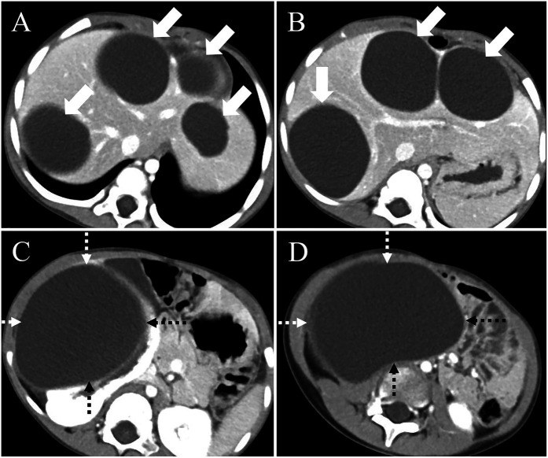

633 — Nang sán lá NGOÀI PHỔI ở trẻ: tim, não, thận, cơ–xương, mắt / Extrapulmonary hydatid cysts in children
Tags: pattern:nang pattern:vo-nang pattern:da-co-quan vung:tim vung:nao vung:than vung:co-xuong vung:hoc-mat protocol:CT protocol:MRI score:WHO-IWGE-CE
Mức chắc chắn (certainty): tổng hợp y văn (literature synthesis) — nhóm tự biên từ y văn mở (CC BY 4.0, CC BY-NC 4.0); các ca minh họa là ca nguyên văn, giữ đúng tuổi và mô tả của bài gốc.
Đây là bài anh em của 621 – Nang sán lá phổi ở trẻ và bước tiếp theo của 632 – Theo dõi dài hạn & tái phát nang sán. 621 trả lời "nang ở phổi"; bài này trả lời câu hỏi hay bị bỏ sót: khi nang nằm ngoài phổi — tim, não, thận, cơ, xương, hốc mắt — thì hình ảnh khác gì, và vì sao "chọc dò" đổi từ thủ thuật điều trị thành tai biến chết người. Nền tảng nang sán gan: 139 – Nang sán lá gan.
1. Tổng quan bệnh học – cơ chế hình ảnh
- Tác nhân: ấu trùng Echinococcus granulosus (bệnh nang sán — cystic echinococcosis). Chu kỳ chó (vật chủ chính) – cừu/gia súc (trung gian); người nhiễm do nuốt trứng (rau sống, nước bẩn, tay bẩn khi chăn nuôi). Trẻ ở vùng chăn thả (Tây Tạng, Trung Á, Địa Trung Hải, Nam Mỹ, Việt Nam) là nhóm nguy cơ.
- Đường đi quyết định "vì sao đa cơ quan": trứng nở ở ruột non → ấu trùng vào tĩnh mạch cửa → gan là bộ lọc đầu tiên (63%) → một phần qua gan vào phổi (25%) → ~10% vượt được phổi vào đại tuần hoàn và gieo tới cơ (5%), xương (3%), thận (2%), lách (1%); tim 0,02–2%, não 1,7% [PMC11205266; PMC12751996; PMC9207044]. Vì vậy thấy nang ở một cơ quan phải quét toàn thân: trong 22 ca nang tim/màng tim, 63,4% có nang ở cơ quan khác (phổi 40,9%, gan 36,4%) [BMC Cardiovasc Disord 2025, PMC12751996].
- Ở trẻ, đa cơ quan lại HIẾM dù nang mọc nhanh hơn: cơ quan nhỏ + hệ miễn dịch chưa hoàn chỉnh → thường một cơ quan [Front Pediatr 2025, PMC12313717]. Đừng vì "trẻ thì hiếm đa cơ quan" mà bỏ tầm soát.
- TẠI SAO hình ảnh là "nang nước điển hình" (vật lý → tín hiệu):
- Dịch nang = nước + muối + protein ít → T1 tối, T2 rất sáng, không ngấm cản quang; trên CT 0–20 HU (ca nang đồi thị đo +16 HU) [PMC11205266].
- Vỏ xơ (pericyst) do vật chủ tạo → ngấm thuốc mỏng thì muộn, có thể vôi hóa (vôi hóa ngoại vi gặp 33%, vôi hóa dày đặc 15%) — dấu hiệu "của người, không của sán".
- Màng sán (endocyst) không ngấm; khi bong khỏi vỏ → dấu màng nổi (floating membrane); có nang con (daughter cysts) xếp ngoại vi → hình "bánh xe" / "nang trong nang".
- Ở xương không có vỏ xơ (xương đặc, không mô mềm bao quanh) → nang không vôi hóa, không giới hạn rõ, ăn dọc bè xương → hình tiêu xương dễ nhầm lao/di căn, đây là lý do nang xương "khó" nhất.
- Ngưỡng định lượng nằm lòng (chỉ ghi số đã kiểm chứng): dịch nang 0–20 HU (ca đồi thị +16 HU); vôi hóa ngoại vi 33%, vôi hóa dày đặc 15%, vách trong nang 25%, nang con 6%, màng nổi 5% (187 ca) [Cureus 2024, PMC11205266]; nang gan 72 × 55 mm đã chèn ép tĩnh mạch chủ dưới ở trẻ 5 tuổi [PMC12313717]. Theo dõi bằng đường kính lớn nhất (mm), không ước lượng mắt.

Trái: nang dưới thượng tâm mạc đè thất trái (mũi tên) ở bé trai 8 tuổi, kèm nhiều nang gan đã vôi hóa — CT không cản quang (Al-Dairy A et al., Int J Surg Case Rep 2026, PMC13340726, CC BY 4.0). Phải: nang sán não khổng lồ vùng trán–thái dương–đỉnh phải, dịch đồng nhất, không phù quanh, đẩy lệch đường giữa ở bé gái 5 tuổi (Hmada S et al., Ann Med Surg 2022, PMC9207044, CC BY 4.0). Ảnh ghép letterbox, giữ nguyên tỷ lệ.2. Mẫu hình + chẩn đoán phân biệt theo CƠ QUAN (Gamut)
- TIM (0,02–2%) — nguy hiểm nhất vì vỡ là tử vong nhanh: trong 18 ca nang tim, thất trái 8, thất phải 5, vách liên thất 5; màng tim 4/22 ca [PMC12751996]. Triệu chứng đau ngực 50%, khó thở 22,7%, ho 18,2% — hoàn toàn không đặc hiệu, nhiều ca không triệu chứng tới khi vỡ. Cơ chế chết: vỡ vào khoang màng tim → chèn ép tim cấp, vỡ vào buồng tim → thuyên tắc phổi/hệ thống, hoặc sốc phản vệ do rò dịch nang. Điều trị = mổ (20/22 ca mổ, không tái phát); 2 ca từ chối mổ đều tử vong trong 1–2 năm do biến chứng nang [PMC12751996].
- NÃO (1,7%, 75% là TRẺ EM): thường một nang, trên lều, thùy đỉnh/bán cầu, không phù quanh, không ngấm; bệnh cảnh tăng áp lực nội sọ + liệt nửa người, có thể động kinh. Kỹ thuật mổ Arana–Iniguez (đẩy nước — hydropsion) để lấy nguyên vẹn nang; cấm chọc hút [PMC9207044].
- THẬN (2%): nang nhiều thùy, đẩy cong đài–bể thận, có thể vỡ vào đường niệu (đái ra màng nang, đau quặn); dễ bị gọi nhầm là nang đơn rồi chọc xơ hóa — sai lầm gieo rắc. Trong ca trẻ 5 tuổi: nang gan lớn nhất 72 × 55 mm chèn ép tĩnh mạch chủ dưới + nang thận phải lớn [PMC12313717].
- CƠ (5%): khối mềm, đau âm ỉ, không sốt; nang dịch đồng nhất trong bụng cơ, có thể có nang con; dễ nhầm áp-xe cơ (psoas)/tụ máu/u mô mềm.
- XƯƠNG (3%): hay ở cột sống, xương chậu, xương dài; tiêu xương bờ không rõ, không vôi hóa, không phản ứng màng xương, có thể xẹp đốt sống và chèn ép tủy; dễ nhầm lao cột sống (Pott), di căn, u xương.
- LÁCH (1%), TỤY, TUYẾN GIÁP, HỐC MẮT (rất hiếm, ca lẻ): khối nang đơn độc; hốc mắt gây lồi mắt một bên ở trẻ → phân biệt nang bì (dermoid), nang coloboma, u mô mềm.
- Gợi nhớ thứ tự tần suất: Gan → Phổi → Cơ → Xương → Thận → Lách → Tim → Não (63 – 25 – 5 – 3 – 2 – 1 – <2 – ~2%).
3. Bảng so sánh phân biệt (ma trận đối chiếu)
| Thực thể (entity) | Hình ảnh điển hình | Chốt vào (rule-in) | Chốt loại (rule-out) | Gợi ý xác nhận |
|---|---|---|---|---|
| Nang sán TIM | Nang dịch đồng nhất trong cơ tim, thường thất trái/dưới thượng tâm mạc, thành mỏng, không ngấm, ± nang con | Nang trong cơ tim + nang ở gan/phổi + dịch tễ | Nang nằm ngoài cơ tim, ngấm thành dày → nang màng ngoài tim/u | Siêu âm tim đầu tay; MRI tim T2; CT có cản quang |
| Nang màng ngoài tim / nang phế quản trung thất | Nang ngoài cơ tim, thành mỏng, ranh giới với cơ tim rõ | Mặt phẳng tách được khỏi cơ tim mọi thì | Nang nằm trong thành cơ tim, di động theo thành tim → nang sán tim | MRI cine; siêu âm |
| Nang sán NÃO | Nang dịch, HU 0–20, thành mỏng đều, KHÔNG phù quanh, không ngấm, đẩy lệch đường giữa | Nang lớn không phù quanh + tăng áp lực nội sọ ở trẻ vùng dịch tễ | Phù quanh rõ + thành ngấm + sốt → áp-xe; hạn chế khuếch tán → áp-xe/mủ | MRI T1/T2/DWI; CT; huyết thanh |
| Nang màng nhện (arachnoid cyst) | Nang dịch = dịch não tủy, bờ mỏng, không đè lệch nhiều, hay ở hố thái dương | Tín hiệu trùng hoàn toàn dịch não tủy mọi chuỗi + không vỏ | Có vỏ/màng + đẩy lệch mạnh + nang con → nang sán | MRI cắt mỏng; so tín hiệu với dịch não tủy |
| U tế bào hình sao dạng nang (cystic astrocytoma) | Nang + phần đặc ngấm thuốc, phù quanh | Có thành phần đặc ngấm + phù | Nang thuần dịch, không phần đặc, không phù → nang sán | MRI + cản quang; mô bệnh |
| Nang sán THẬN | Nang nhiều thùy vỏ thận, đẩy cong đài–bể thận, ± vôi hóa vỏ | Nang nhiều thùy + nang gan + huyết thanh dương | Nang đơn thành mỏng ngoại vi (Bosniak I) → nang đơn | Siêu âm + CT; không chọc khi chưa loại nang sán |
| K thận dạng nang (cystic RCC) | Thành dày, ngấm, vách/nốt trong nang, canxi hóa không đều | Thành/vách ngấm > 1 mm hoặc nốt đặc trong nang | Thành mỏng không ngấm, dịch đồng nhất → nang lành/nang sán | CT đa thì; Bosniak; mô bệnh |
| Nang sán CƠ | Khối dịch trong bụng cơ, có nang con, không phù mô mềm quanh | Nang dịch + nang con + dịch tễ | Phù quanh + ngấm viền + sốt → áp-xe cơ | Siêu âm/CT/MRI; huyết thanh |
| Nang sán XƯƠNG | Tiêu xương bờ không rõ, không vôi hóa, không màng xương, có thể xẹp đốt sống | Tiêu xương + nang mô mềm cạnh + dịch tễ | Hẹp đĩa đệm + phá hủy 2 thân đốt + áp-xe lạnh → lao; bờ phá xương rộng, đa ổ → di căn | MRI cột sống; sinh thiết khi không chắc |
4. Protocol + phân loại WHO-IWGE + đường điều trị
- Chụp gì, theo thứ tự:
- Tim: siêu âm tim là đầu tay (nang, vị trí, chèn ép) → MRI tim T2 khi cần phân biệt trong/ngoài cơ tim; CT ngực có cản quang cho Canxi hóa, tương quan mạch vành.
- Não: MRI sọ T1 + T2 + DWI (không cản quang nếu chỉ tìm nang); CT khi cấp cứu/tăng áp lực nội sọ. DWI là chốt loại áp-xe: nang sán không hạn chế khuếch tán, áp-xe hạn chế (ADC thấp).
- Bụng/thận: siêu âm bụng (phân loại WHO-IWGE) → CT bụng 3 thì; MRI/MRCP khi nang gần đường mật.
- Toàn thân: CT ngực–bụng một lần khi phát hiện nang tim/não, vì 63,4% có nang thứ hai [PMC12751996].
- Xét nghiệm: ELISA/kháng thể IgG hỗ trợ — âm tính KHÔNG loại trừ (nang còn nguyên vỏ, nang xương, nang não thường âm tính); theo dõi hiệu giá sau điều trị 632.
- Phân loại WHO-IWGE (CE1–CE5) quyết định can thiệp — dùng chung cho gan/thận/lách:
- CE1 nang đơn, CE2 đa thùy/nang con → hoạt động;
- CE3a màng trong bong, CE3b đặc chủ yếu + nang con → chuyển tiếp;
- CE4 đặc, CE5 vôi hóa → không hoạt động.
- Điều trị (nguyên tắc "không chọc vào nang nguyên vẹn ở tim/não"):
- Albendazole 15 mg/kg/ngày (tối đa 800 mg/ngày), 2 tuần trước mổ, tiếp 3 tháng sau mổ, theo dõi men gan hàng tuần [PMC13340726]. Ca trẻ 5 tuổi đa cơ quan: hội chẩn đa chuyên khoa, cắt vỏ nang (pericystectomy) bảo tồn cơ quan, tránh kẹp mạch gan vì trẻ nhỏ [PMC12313717].
- Tim: mổ tim hở lấy nang; tuần hoàn ngoài cơ thể (CPB) khi tụt huyết áp lúc bộc lộ nang (đã gặp trong ca 8 tuổi) [PMC13340726].
- Não: lấy nguyên vẹn bằng kỹ thuật Arana–Iniguez, không làm vỡ; albendazole sau mổ [PMC9207044].
- PAIR (chọc–hút–bơm–hút lại) chỉ dùng cho gan/thận/lách CE1–CE2 chọn lọc, có albendazole kèm; chống chỉ định tuyệt đối với nang tim và nang não.
- Theo dõi: khám + siêu âm/CT tại 1, 3, 6, 12 tháng rồi mỗi 6–12 tháng, tối thiểu 24 tháng (ca 8 tuổi lên lịch 24 tháng) [PMC13340726]; tái phát thường trong 2–3 năm đầu.
flowchart TD
A["Nang dịch đơn thuần trên CT/MRI"] --> B{"Vị trí nang?"}
B -->|"Tim"| C["Siêu âm tim + MRI tim<br/>KHÔNG chọc, KHÔNG PAIR"]
B -->|"Não"| D["MRI T1/T2/DWI<br/>DWI không hạn chế = nang sán"]
B -->|"Gan / thận / lách"| E["Phân loại WHO-IWGE CE1-CE5"]
C --> F["Mổ lấy nang nguyên vẹn<br/>± CPB; albendazole 15 mg/kg/ngày"]
D --> G["Arana-Iniguez lấy nguyên vẹn<br/>+ albendazole"]
E --> H{"CE1-CE2 hoạt động?"}
H -->|"Có"| I["PAIR hoặc mổ ± albendazole"]
H -->|"Không"| J["Theo dõi 6-12 tháng<br/>CE4-CE5 có thể không cần điều trị"]
F --> K["Siêu âm/CT 1-3-6-12 tháng<br/>tối thiểu 24 tháng"]
G --> K
I --> K
J --> K
K --> L{"Tái phát / nang mới?"}
L -->|"Có"| M["Hội chẩn đa chuyên khoa<br/>albendazole dài ngày ± mổ lại"]
L -->|"Không"| N["Tiếp tục theo dõi"]
Đọc flowchart: nhánh tim/não không bao giờ đi qua PAIR — đây là điểm khác biệt cốt lõi so với nang gan (bài 139) và nang phổi (bài 621).
5. Biến thể bình thường và cạm bẫy
- Nang sán não "sạch" (không phù quanh) bị coi là nang lành → chọc dẫn lưu → vỡ, gieo rắc màng sán, viêm màng não kéo dài. Quy tắc: nang não một bên, không phù, ở trẻ vùng dịch tễ = cấm chọc.
- Nang thận bị nhầm nang đơn → chọc xơ hóa bằng cồn: cồn vào nang sán gây kích ứng, sốc phản vệ, tái phát. Trước khi chọc bất kỳ nang thận nào: hỏi dịch tễ + siêu âm tìm nang con + quét gan.
- Tăng natri máu thoáng qua sau mổ do dung dịch NaCl ưu trương diệt đầu sán tràn vào tuần hoàn — theo dõi điện giải 24–48 giờ đầu [PMC12313717].
- Nang nhỏ (< 1 cm) có thể bỏ sót trên CT lát dày → dùng lát ≤ 1 mm ở gan/thận và MRI cho não; đừng kết luận "chỉ một nang" sau một lần chụp.
- Nang xương không vôi hóa nên dễ bị loại khỏi chẩn đoán phân biệt — nếu tiêu xương + nang mô mềm cạnh + dịch tễ, phải nghĩ nang sán dù không có vôi hóa.
- Trẻ em = ALARA: ưu tiên siêu âm + MRI cho bụng/não; CT chỉ khi cần xương hoặc cấp cứu. Một CT ngực–bụng "tầm soát toàn thân" chỉ nên làm một lần khi đã xác định nang tim/não.
- Đừng quên mắt/hốc mắt: lồi mắt một bên ở trẻ vùng chăn nuôi — thêm nang sán vào gamut cạnh dermoid, nang coloboma (450 – Mắt nhi).
6. Tự lượng giá — Blind Quiz
Ca 1 — Bé trai 8 tuổi, đau bụng + nôn + ho khan. Nhìn CT ngực, mô tả trước khi đọc đáp án.

- Hỏi: tổn thương nằm trong hay ngoài cơ tim? Có ngấm thuốc không? Cơ quan thứ hai ở đâu? Vì sao không được chọc hút?
Bấm để hiện đáp án
- Nang dưới thượng tâm mạc đè thất trái (mũi tên), thành mỏng, dịch đồng nhất, không ngấm; lát cắt dưới thấy nhiều nang gan đã vôi hóa → nang sán tim + gan đồng thời ở trẻ 8 tuổi.
- Chọc hút → vỡ nang, chèn ép tim cấp, thuyên tắc, sốc phản vệ → đây là chỉ định mổ, không phải can thiệp qua da.
- Xử trí thực tế của ca: albendazole 15 mg/kg/ngày × 2 tuần trước mổ → mổ bóc nang tim (tụt huyết áp khi bộc lộ → CPB), 1 tháng sau mổ nang gan, albendazole tiếp 3 tháng, theo dõi 24 tháng.
- Nguồn: Al-Dairy A et al., Int J Surg Case Rep 2026, PMC13340726, CC BY 4.0.
Ca 2 — Bé gái 5 tuổi, đau đầu tăng dần + liệt nửa người. CT sọ không cản quang:

- Hỏi: 3 chẩn đoán phân biệt? Dấu hiệu nào loại áp-xe? Kỹ thuật mổ?
Bấm để hiện đáp án
- Nang lớn dịch đồng nhất, thành mỏng, KHÔNG phù quanh, đẩy lệch đường giữa → nang sán não; phân biệt nang màng nhện, u tế bào hình sao dạng nang, áp-xe não.
- Loại áp-xe: không phù quanh, không ngấm viền, và trên MRI DWI không hạn chế khuếch tán (áp-xe hạn chế).

- MRI cùng bệnh nhân: trái T1 tối, phải T2 rất sáng (nang ~10,3 cm theo thước đo trên ảnh), không phần đặc ngấm — đúng tín hiệu nang nước; hiệu ứng khối đẩy lệch đường giữa.
- Mổ lấy nguyên vẹn bằng kỹ thuật Arana–Iniguez (đẩy nước), không chọc; albendazole sau mổ. Bệnh nhân hồi phục, CT kiểm tra còn khoang tồn dư.
- Nguồn: Hmada S et al., Ann Med Surg 2022, PMC9207044, CC BY 4.0.
Ca 3 — Bé trai 5 tuổi vùng chăn nuôi, khối bụng phải 5 cm, không sốt:

- Hỏi: A/B là gì, C/D là gì? Vì sao không gọi đây là nang đơn? Biến chứng nội khoa cần theo dõi sau mổ?
Bấm để hiện đáp án
- A/B: nhiều nang gan (lớn nhất 72 × 55 mm) chèn ép tĩnh mạch chủ dưới; C/D: nang thận phải khổng lồ đẩy lệch đài–bể thận.
- Không phải nang đơn vì nhiều thùy, vỏ dày, không ngấm, kèm nang gan + ELISA dương → nang sán đa cơ quan; chọc xơ hóa sẽ gieo rắc.
- Điều trị: hội chẩn đa chuyên khoa → cắt vỏ nang bảo tồn cơ quan cả gan và thận; theo dõi tăng natri máu thoáng qua sau mổ.
- Nguồn: Zhou Q, Xia Y, Zou H., Front Pediatr 2025, PMC12313717, CC BY 4.0.
Bài liên quan chéo
- 621 – Nang sán lá phổi ở trẻ (dấu hoa súng, Cumbo)
- 632 – Theo dõi dài hạn & tái phát nang sán
- 139 – Nang sán lá gan (PAIR, phân loại WHO-IWGE)
- 150 – Nang thận & Bosniak (phân biệt nang đơn)
- 151 – U thận đặc (K thận dạng nang)
- 450 – Mắt nhi (lồi mắt một bên ở trẻ)
Không dùng để chẩn đoán độc lập khi chưa có người hướng dẫn.